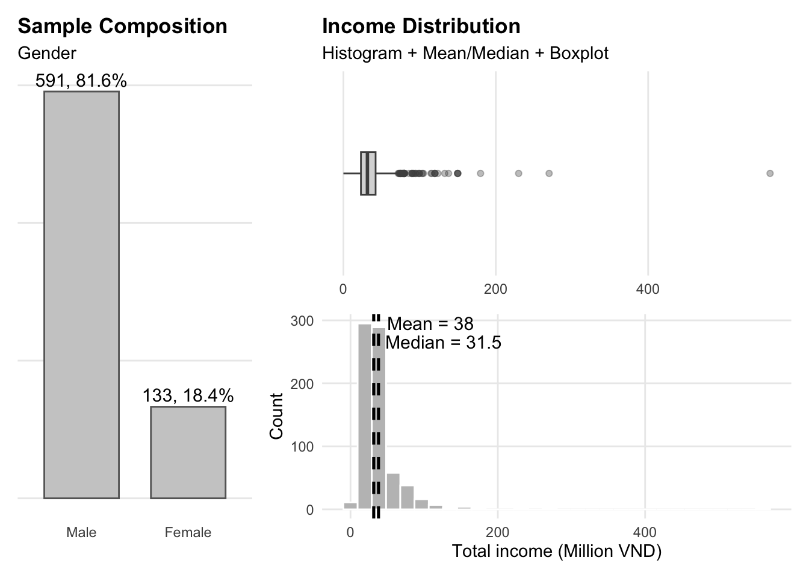
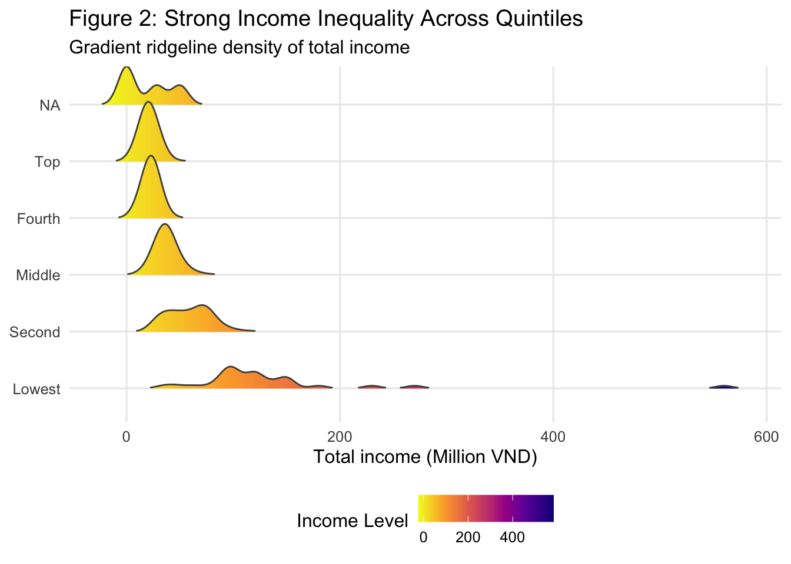
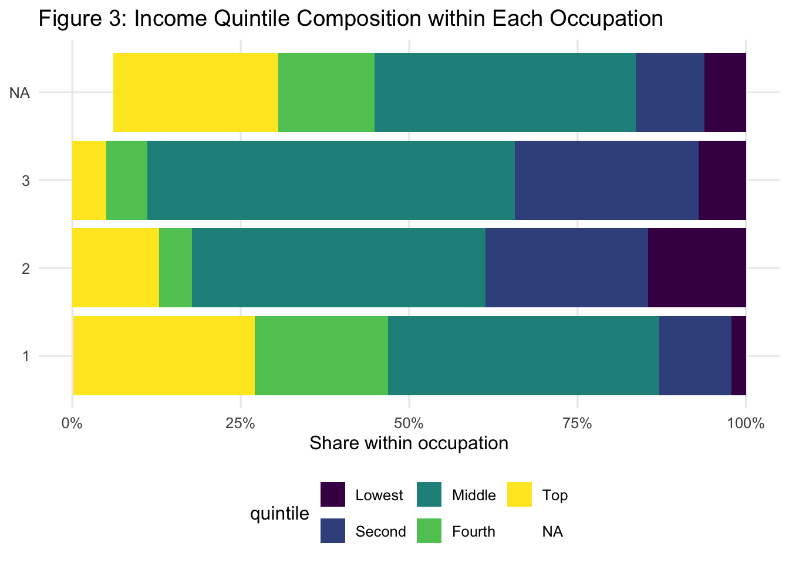
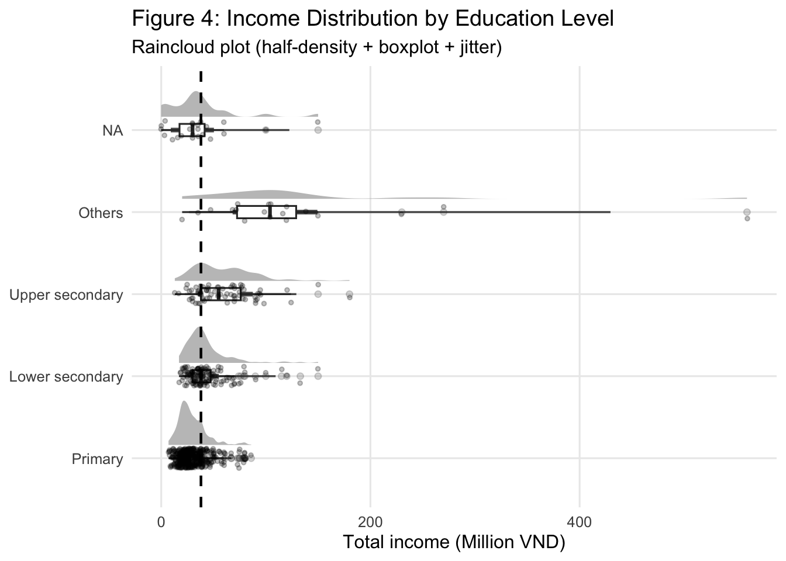
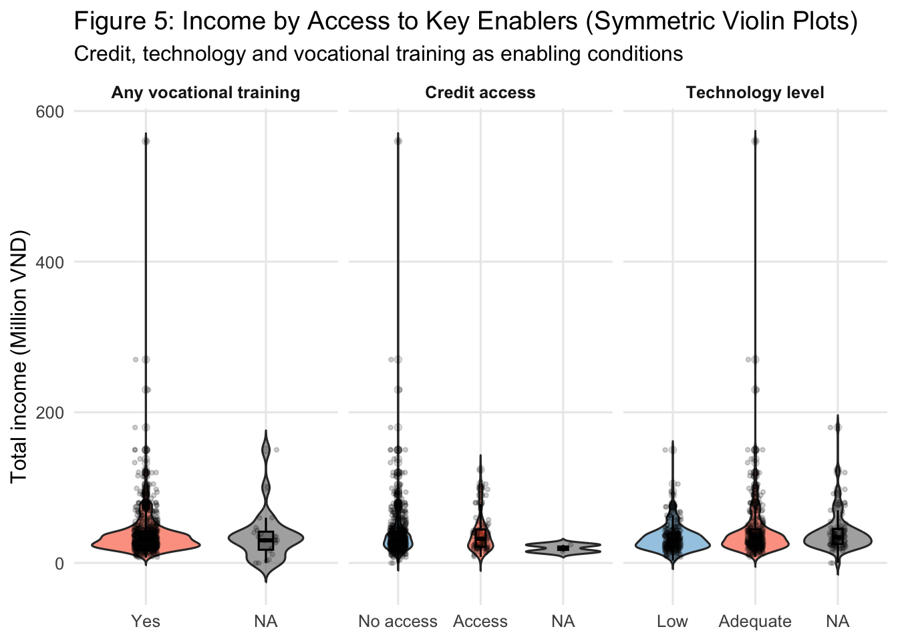
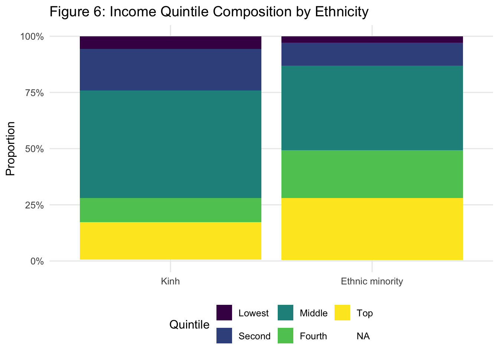
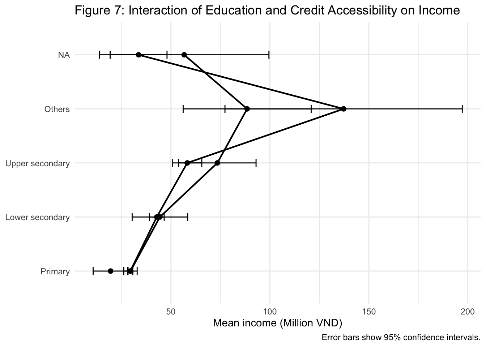

pacman::p_load(tidyverse, readxl, janitor, skimr, scales,ggthemes, patchwork,ggdist, ggridges,DiagrammeR)
theme_set(theme_minimal())
set.seed(608)Take-home_Exercise01
Visually-driven Survey Analysis of Informal Rural Labourers’ Income in Northern Vietnam
1. Introduction
This take-home exercise applies visually driven survey analysis techniques to examine income patterns and influencing factors among informal rural labourers in Vietnam’s northern mountainous regions. Using tidyverse for data processing and ggplot2 for visualisation, the analysis aims to reveal key socio-economic disparities and structural constraints affecting rural incomes.
2. Getting started
2.1 Install the Analytical Tools
The tidyverse ecosystem was used for data wrangling and visualisation. The Excel dataset was imported using readxl, and variable names were standardised using janitor to ensure consistent formatting.
2.2 Importing the Dataset
raw <- read_excel("Upload for elsiver.xlsx")
glimpse(raw)Rows: 725
Columns: 30
$ CPRO <dbl> 1, 1, 1, 1, 1, 1, 1, 1, 1, 1, 1, 1, 1, 1, 1, 1, 1, 1, 1, 1, 1, 1,…
$ CGEN <chr> "1", "1", "2", "1", "2", "2", "1", "1", "1", "1", "1", "2", "2", …
$ CRAC <dbl> 2, 2, 2, 2, 2, 2, 2, 2, 2, 2, 2, 1, 1, 2, 2, 2, 1, 1, 1, 1, 1, 1,…
$ CJOB <dbl> 1, 1, 3, 1, 1, NA, 3, 1, 3, 1, 1, 1, 2, 1, NA, 2, 1, 1, 1, 1, 1, …
$ CQUI <dbl> 3, 5, 3, 3, 3, 4, 1, 3, 3, 3, 3, 3, 2, 3, 5, 1, 2, 2, 2, 2, 2, 2,…
$ TEIN <dbl> 37, 25, 33, 35, 36, 21, 35, 36, 38, 30, 58, 24, 32, 11, 22, 95, 4…
$ TAIN <dbl> 25, 22, 25, 30, 28, 17, 25, 28, 26, 22, 40, 24, 23, 11, 20, 30, 3…
$ TSII <dbl> 7, 0, 0, 5, 0, 0, 0, 0, 12, 2, 0, 0, 0, 0, 0, 50, 17, 10, 12, 15,…
$ TOIN <dbl> 5, 3, 8, 0, 8, 4, 10, 8, 0, 6, 18, 0, 9, 0, 2, 15, 0, 0, 0, 0, 16…
$ FEDU <dbl> 1, 0, 1, 1, 0, 0, 3, 0, 2, 0, 0, 0, 0, 0, 0, 2, 1, 2, 2, 2, 2, 2,…
$ FVTP <dbl> 1, 1, 1, 1, 1, 1, 2, 1, 2, 1, 1, 1, 1, 1, 1, 2, 1, 2, 2, 2, 2, 2,…
$ FCRA <dbl> 1, 2, 1, 1, 1, 1, 1, 1, 1, 1, 1, 1, 1, 1, 1, 1, 1, 1, 1, 1, 1, 1,…
$ FTAP <dbl> 1, 1, 2, NA, 2, 2, 2, 2, 2, 2, 2, NA, NA, 2, NA, 2, NA, 2, NA, NA…
$ LHO1 <dbl> NA, 1, NA, 1, NA, NA, NA, NA, NA, NA, NA, NA, NA, NA, 1, NA, NA, …
$ LHO2 <dbl> 1, NA, NA, NA, 1, 1, NA, 1, 1, 1, 1, 1, NA, 1, NA, NA, NA, NA, NA…
$ LHO3 <dbl> NA, NA, NA, NA, NA, NA, 1, NA, NA, NA, NA, NA, 1, NA, NA, 1, 1, 1…
$ LHO4 <dbl> NA, NA, 1, NA, NA, NA, NA, NA, NA, NA, NA, NA, NA, NA, NA, NA, NA…
$ LCRE <dbl> NA, 15, NA, NA, NA, NA, NA, NA, NA, NA, NA, NA, NA, NA, NA, NA, N…
$ LSAV <dbl> 5, NA, 30, NA, NA, 2, 70, NA, 25, 10, 15, NA, NA, 16, NA, 20, NA,…
$ LWDA <dbl> 240, 350, 260, 300, 360, 360, 260, 260, 300, 300, 270, NA, NA, 20…
$ PPO1 <dbl> 5, 2, 5, NA, 5, 2, 5, 5, 4, 5, 4, NA, NA, NA, NA, NA, NA, NA, NA,…
$ PPO2 <dbl> 2, 5, 5, NA, 5, 4, 2, 2, 3, 1, 1, NA, NA, NA, NA, NA, NA, NA, NA,…
$ PPO3 <dbl> 3, 3, 1, NA, 1, 3, 3, 3, 3, 3, 3, NA, NA, 1, NA, 1, NA, 1, NA, 1,…
$ PPO4 <dbl> 1, 1, 1, NA, 1, 1, 2, 2, 2, 2, 2, NA, NA, 3, NA, NA, NA, NA, NA, …
$ PPO5 <dbl> 3, 1, 1, NA, 1, 1, 3, 3, 3, 3, 3, NA, NA, 1, NA, NA, NA, NA, NA, …
$ ARO1 <dbl> 3, 1, 1, NA, 1, 1, 2, 2, 2, 2, 2, NA, NA, NA, NA, NA, NA, NA, NA,…
$ ARO2 <dbl> 1, 1, 1, NA, 1, 1, 1, 1, 1, 2, 1, NA, NA, 2, NA, NA, NA, NA, NA, …
$ ARO3 <dbl> 1, 1, 1, NA, 1, 1, 3, 3, 2, 3, 3, NA, NA, 1, NA, 1, NA, NA, NA, 1…
$ ARO4 <chr> "3", "3", NA, NA, "2", "2", "3", "3", "3", "3", "3", NA, NA, "3",…
$ ARO5 <dbl> 1, 1, 1, NA, 1, 1, 3, 3, 3, 3, 3, NA, NA, 1, NA, NA, NA, NA, NA, …The dataset contains survey responses from informal rural labourers across northern mountainous provinces of Vietnam. The variables include demographic characteristics, income indicators, education, vocational training participation, credit accessibility, and technological application.
2.3 Cleaning Variable Names
dat <- raw %>%
clean_names()Column names were converted into lowercase and standardized format to avoid issues related to spaces and inconsistent naming conventions during analysis.
2.4 Converting Variable Types
dat <- dat %>%
mutate(
province = factor(cpro),
gender = factor(
cgen,
levels = c(1, 2),
labels = c("Male", "Female")
),
race = factor(
crac,
levels = c(1, 2, 3),
labels = c("Kinh", "Ethnic minority", "Others")
),
job = factor(cjob),
quintile = factor(
cqui,
levels = c(1,2,3,4,5),
labels = c("Lowest","Second","Middle","Fourth","Top"),
ordered = TRUE
),
education = factor(
fedu,
levels = c(0,1,2,3),
labels = c("Primary",
"Lower secondary",
"Upper secondary",
"Others"),
ordered = TRUE
),
training = factor(
fvtp,
levels = c(0,1,2),
labels = c("None",
"Short course",
"Long course"),
ordered = TRUE
),
credit = factor(
fcra,
levels = c(1,2),
labels = c("No access","Access"),
ordered = TRUE
),
technology = factor(
ftap,
levels = c(1,2),
labels = c("Low","Adequate"),
ordered = TRUE
),
income = as.numeric(tein)
)Categorical variables were converted into factors to ensure proper treatment in visualisation. Ordinal variables such as income quintile, education level, training participation, credit accessibility, and technological application were explicitly ordered to preserve their logical ranking. The income variable (TEIN) was converted into numeric format for distributional analysis.
2.5 Handling Missing Values
colSums(is.na(dat)) cpro cgen crac cjob cqui tein tain
0 0 0 49 4 1 1
tsii toin fedu fvtp fcra ftap lho1
6 0 23 23 2 102 512
lho2 lho3 lho4 lcre lsav lwda ppo1
402 616 653 636 520 160 209
ppo2 ppo3 ppo4 ppo5 aro1 aro2 aro3
230 88 99 106 102 102 89
aro4 aro5 province gender race job quintile
111 108 0 0 0 49 4
education training credit technology income
23 23 2 102 1 dat <- dat %>%
filter(!is.na(income))Observations with missing income values were removed, as income is the primary outcome variable in this analysis. Retaining incomplete records would bias summary statistics and visual interpretations.
3. Visual Analytics & Key Observations
3.1 Income distribution is positively skewed
Show the code
# ---- Gender summary ----
gender_sum <- dat %>%
count(gender, name = "n") %>%
mutate(pct = n / sum(n))
# ---- Income statistics ----
income_mean <- mean(dat$income, na.rm = TRUE)
income_median <- median(dat$income, na.rm = TRUE)
# ---- Left panel: gender composition ----
p_gender <- ggplot(gender_sum, aes(x = gender, y = n)) +
geom_col(fill = "grey80", color = "grey40", width = 0.7) +
geom_text(
aes(label = paste0(n, ", ", percent(pct, accuracy = 0.1))),
vjust = -0.4, size = 4
) +
labs(
title = "Sample Composition",
subtitle = "Gender",
x = NULL, y = NULL
) +
theme(
panel.grid.major.x = element_blank(),
panel.grid.minor = element_blank(),
axis.text.y = element_blank(),
axis.ticks.y = element_blank(),
plot.title = element_text(face = "bold")
)
# ---- Right-top: compact boxplot ----
p_income_box <- ggplot(dat, aes(x = income, y = "")) +
geom_boxplot(fill = "grey85", color = "grey30",
width = 0.25, outlier.alpha = 0.35) +
scale_x_continuous(labels = comma) +
labs(
title = "Income Distribution",
subtitle = "Histogram + Mean/Median + Boxplot",
x = NULL, y = NULL
) +
theme(
panel.grid.major.y = element_blank(),
panel.grid.minor = element_blank(),
axis.text.y = element_blank(),
axis.ticks.y = element_blank(),
plot.title = element_text(face = "bold")
)
# ---- Right-bottom: histogram with mean/median ----
p_income_hist <- ggplot(dat, aes(x = income)) +
geom_histogram(bins = 30,
fill = "grey75", color = "white") +
geom_vline(xintercept = income_mean,
linetype = "dashed", linewidth = 0.9) +
geom_vline(xintercept = income_median,
linetype = "dashed", linewidth = 0.9) +
annotate(
"text", x = income_mean, y = Inf,
label = paste0("Mean = ", round(income_mean, 2)),
vjust = 1.2, hjust = -0.1, size = 4
) +
annotate(
"text", x = income_median, y = Inf,
label = paste0("Median = ", round(income_median, 2)),
vjust = 2.6, hjust = -0.1, size = 4
) +
scale_x_continuous(labels = comma) +
labs(
x = "Total income (Million VND)",
y = "Count"
) +
theme(
panel.grid.minor = element_blank()
)
# ---- Combine layout ----
(p_gender | (p_income_box / p_income_hist)) +
plot_layout(widths = c(1, 2), heights = c(1, 3))
The sample composition reveals a gender imbalance in informal rural labour participation. Income distribution is strongly right-skewed, with most labourers clustered at lower income levels and a small number earning substantially more. The mean exceeds the median, confirming the influence of high-income outliers. This baseline visual establishes both structural participation patterns and income inequality, providing a foundation for subsequent subgroup analysis.
This highlights the need to consider distributional inequality rather than relying solely on average income indicators.
3.2 Strong income inequality across quintiles
Show the code
dat$quintile <- factor(dat$quintile, ordered = TRUE)
ggplot(dat, aes(x = income, y = quintile, fill = after_stat(x))) +
geom_density_ridges_gradient(
scale = 1.1,
rel_min_height = 0.01,
size = 0.2,
color = "grey30"
) +
scale_fill_viridis_c(option = "C", direction = -1) +
scale_x_continuous(labels = comma) +
labs(
title = "Figure 2: Strong Income Inequality Across Quintiles",
subtitle = "Gradient ridgeline density of total income",
x = "Total income (Million VND)",
y = NULL,
fill = "Income Level"
) +
theme_minimal(base_size = 12) +
theme(
legend.position = "bottom",
panel.grid.minor = element_blank()
)Warning in geom_density_ridges_gradient(scale = 1.1, rel_min_height = 0.01, :
Ignoring unknown parameters: `size`Picking joint bandwidth of 7.89
The gradient ridgeline plot highlights strong income inequality across quintiles. Distributions shift progressively to the right from the lowest to the highest quintile, indicating systematic differences in income levels. Higher quintiles exhibit longer and heavier right tails, reflecting greater variability and stronger upper-end earnings potential. The gradual color transition further emphasizes the expansion of income range as quintiles increase. Overall, inequality is not only a difference in central tendency but also a widening of distributional spread.
These patterns suggest that inequality is embedded across income tiers and not limited to extreme cases.
3.3 Job & Quintile structure
Show the code
dat %>%
count(job, quintile) %>%
group_by(job) %>%
mutate(prop = n / sum(n)) %>%
ggplot(aes(x = job, y = prop, fill = quintile)) +
geom_col() +
coord_flip() +
scale_y_continuous(labels = percent) +
labs(
title = "Figure 3: Income Quintile Composition within Each Occupation",
x = NULL, y = "Share within occupation"
) +
theme_minimal(base_size = 12) +
theme(panel.grid.minor = element_blank(),
legend.position = "bottom")
Occupations differ in their income structures: some job categories are disproportionately concentrated in lower quintiles, while others have higher representation in upper quintiles. This suggests that income inequality is partly rooted in sectoral segmentation, not only individual traits.
This implies that sectoral employment structure plays a critical role in shaping income mobility.
3.4 Education gradient
Show the code
overall_mean <- mean(dat$income, na.rm = TRUE)
ggplot(dat, aes(x = education, y = income)) +
ggdist::stat_halfeye(
adjust = 0.8,
width = 0.6,
justification = -0.3,
point_colour = NA,
alpha = 0.7
) +
geom_boxplot(
width = 0.15,
outlier.alpha = 0.2
) +
geom_jitter(
width = 0.12,
alpha = 0.25,
size = 1
) +
geom_hline(
yintercept = overall_mean,
linetype = "dashed",
linewidth = 0.8
) +
scale_y_continuous(labels = comma) +
coord_flip() +
labs(
title = "Figure 4: Income Distribution by Education Level",
subtitle = "Raincloud plot (half-density + boxplot + jitter)",
x = NULL,
y = "Total income (Million VND)"
) +
theme_minimal(base_size = 12) +
theme(panel.grid.minor = element_blank())
The raincloud plot shows that income tends to increase with education level, as higher categories display distributions shifted upward. However, there is substantial overlap between groups, indicating that education does not guarantee higher earnings in informal rural labour markets. Income variability also appears wider among higher education levels, suggesting unequal access to income opportunities even within the same category. The overall mean line highlights that some groups remain below the average despite improvements in education. Overall, while education is positively associated with income, inequality persists within and across education levels.
Therefore, education improves income potential but does not fully offset structural constraints in informal labour markets.
3.5 Access to key enablers (credit, technology, training)
Show the code
dat2 <- dat %>%
mutate(
any_training = if_else(training == "None", "No", "Yes"),
any_training = factor(any_training, levels = c("No", "Yes"))
)
dat_long <- dat2 %>%
transmute(
income,
credit = as.character(credit),
technology = as.character(technology),
any_training = as.character(any_training)
) %>%
pivot_longer(
cols = c(credit, technology, any_training),
names_to = "resource",
values_to = "access"
) %>%
mutate(
resource = recode(resource,
credit = "Credit access",
technology = "Technology level",
any_training = "Any vocational training"),
access = case_when(
access %in% c("No", "Yes") ~ factor(access, levels = c("No", "Yes")),
access %in% c("No access", "Access") ~ factor(access, levels = c("No access", "Access")),
access %in% c("Low", "Adequate") ~ factor(access, levels = c("Low", "Adequate")),
TRUE ~ factor(access)
)
)
ggplot(dat_long, aes(x = access, y = income, fill = access)) +
geom_violin(alpha = 0.65, trim = FALSE, width = 0.9) +
geom_boxplot(width = 0.12, outlier.alpha = 0.15, color = "black") +
geom_jitter(width = 0.1, alpha = 0.18, size = 0.8) +
facet_wrap(~resource, scales = "free_x") +
scale_y_continuous(labels = comma) +
scale_fill_manual(values = c(
"No" = "#6BAED6", "Yes" = "#FB6A4A",
"No access" = "#6BAED6", "Access" = "#FB6A4A",
"Low" = "#6BAED6", "Adequate" = "#FB6A4A"
)) +
labs(
title = "Figure 5: Income by Access to Key Enablers (Symmetric Violin Plots)",
subtitle = "Credit, technology and vocational training as enabling conditions",
x = NULL,
y = "Total income (Million VND)"
) +
theme_minimal(base_size = 12) +
theme(
legend.position = "none",
panel.grid.minor = element_blank(),
strip.text = element_text(face = "bold")
)
Income distributions shift upward for groups with stronger enabling conditions. Labourers with credit access tend to have higher income ranges than those without access, suggesting that financial resources may support investment and income-generating activities. Respondents reporting adequate technology also show higher income distributions relative to those with low technology, indicating that tools and technology readiness matter even in informal work. Finally, individuals with any vocational training generally display higher income potential than those without training. Despite these differences, the distributions still overlap substantially, implying that enablers improve opportunities but do not fully eliminate inequality. Overall, the figure supports a “capability + resource” mechanism in shaping income outcomes.
This indicates that enabling resources enhance opportunities but cannot independently resolve income disparities.
3.6 Ethnicity and income stratification
Show the code
dat %>%
count(race, quintile) %>%
group_by(race) %>%
mutate(prop = n / sum(n)) %>%
ggplot(aes(x = race, y = prop, fill = quintile)) +
geom_col() +
scale_y_continuous(labels = percent) +
labs(
title = "Figure 6: Income Quintile Composition by Ethnicity",
x = NULL, y = "Proportion",
fill = "Quintile"
) +
theme_minimal(base_size = 12) +
theme(panel.grid.minor = element_blank(),
legend.position = "bottom")
Beyond economic and capability factors, social stratification may further shape income distribution patterns. Ethnic groups display distinct income stratification patterns. A larger share of ethnic minority respondents is concentrated in lower income quintiles compared to the Kinh majority. This suggests that income inequality is not purely individual-level but may reflect structural disadvantages linked to geography, access to resources, and employment opportunities. The persistent concentration at the lower end indicates potential barriers to upward income mobility among minority communities.
This indicates that structural inequalities may intersect with economic disadvantages, reinforcing persistent income gaps.
3.7 Deepening insight: Who benefits most?
Show the code
inter_sum <- dat %>%
group_by(education, credit) %>%
summarise(
n = n(),
mean_income = mean(income, na.rm = TRUE),
sd_income = sd(income, na.rm = TRUE),
se = sd_income / sqrt(n),
ci_low = mean_income - 1.96 * se,
ci_high = mean_income + 1.96 * se,
.groups = "drop"
)
ggplot(inter_sum, aes(x = education, y = mean_income, group = credit)) +
geom_line(linewidth = 0.8) +
geom_point(size = 2) +
geom_errorbar(aes(ymin = ci_low, ymax = ci_high), width = 0.15) +
coord_flip() +
scale_y_continuous(labels = comma) +
labs(
title = "Figure 7: Interaction of Education and Credit Accessibility on Income",
x = NULL,
y = "Mean income (Million VND)",
caption = "Error bars show 95% confidence intervals."
)
The income advantage of credit access is not uniform across education levels. If the gap between credit groups is larger at higher education levels, it suggests “capability × resource” complementarity—credit is more effectively converted into income when labourers possess stronger human capital. This deepens the story from simple group differences to interaction-driven inequality.
This interaction effect underscores that income inequality is shaped by the combined influence of human capital and resource accessibility.
4. Summary
This visually-driven survey analysis demonstrates that income inequality among informal rural labourers is structurally embedded. Income distribution is highly skewed, and disparities widen across quintiles. Occupational segmentation, educational attainment, resource accessibility, and ethnic stratification jointly shape income outcomes. Most importantly, interaction effects suggest that human capital and resource access reinforce one another rather than operate independently.
Key findings:
Income inequality is structurally embedded: Income distribution is highly skewed, with widening variability in higher quintiles.
Occupational segmentation matters: Agricultural dominance and limited sectoral diversification contribute to lower-income concentration.
Education shows a positive gradient: Higher education levels are associated with higher income potential, though returns are not uniform.
Training depth is more effective than short participation: Long-term vocational training shows stronger income association than short courses.
Resource access improves income ceilings: Credit and technological application shift income distributions upward.
Capability–resource complementarity exists: The income benefit of credit appears stronger among labourers with higher educational attainment.
Recommendations for Future Research:
Incorporate multivariate modelling: Apply regression or multilevel models to assess the relative contribution of education, training, credit, and occupation while controlling for confounding variables.
Examine interaction mechanisms further: Investigate how human capital and resource accessibility jointly shape income mobility.
Analyse income mobility over time: Longitudinal or panel data would allow examination of upward or downward income transitions.
Expand geographic coverage: Comparing mountainous and lowland regions could reveal regional structural differences.
Integrate qualitative insights: Combining survey data with interviews may better explain behavioural and institutional constraints behind observed income patterns.